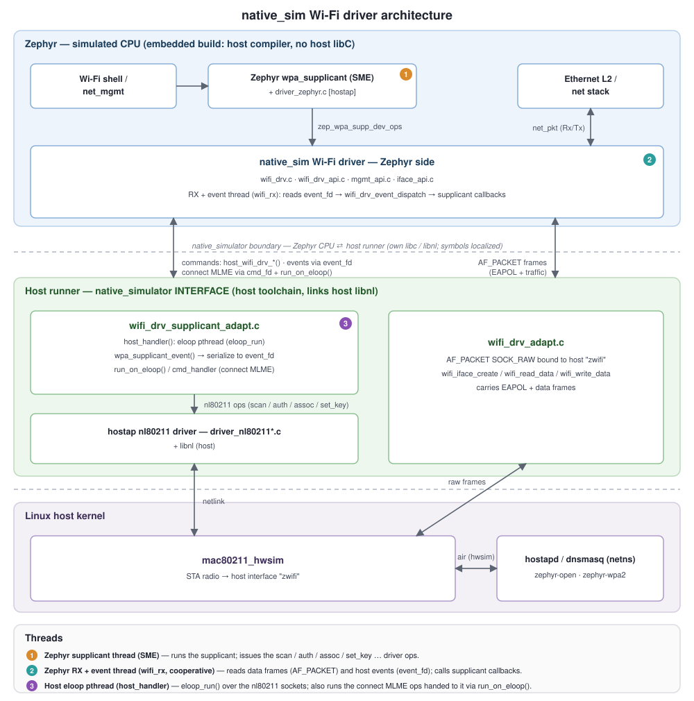

Native simulator - native_sim
概述
native_sim 开发板是一款基于 POSIX 架构 的开发板。借助它，Zephyr 应用程序可以与 Zephyr 内核和库一起编译，生成一个普通的 Linux 可执行文件。
native_sim 基于 native simulator 和 POSIX 架构。
该开发板并不打算模拟任何特定的硬件，但它提供了一些外设，例如以太网驱动、显示屏、UART 等，以便开发和测试需要这些外设的应用程序代码。更多信息请参阅 Peripherals。
备注
native_sim 是其前身 native_posix 的演进版本。主机系统依赖
请查看 POSIX 架构依赖项
重要限制和不支持的功能
native_sim 基于 POSIX 架构，因此 其限制 和注意事项同样适用于它。
同样，它也继承了 POSIX 架构的 不支持功能集。
注意，某些驱动可能存在限制，或者可能不支持其驱动 API 的全部可选功能。
使用方法
编译
构建时，只需将 native_sim 开发板指定为目标：
west build -b native_sim samples/hello_world
运行
编译结果是一个可执行文件（zephyr.exe），位于 build 文件夹的 zephyr/ 子目录中。像运行其他 Linux 控制台应用程序一样运行 zephyr.exe 可执行文件即可。
$ ./build/zephyr/zephyr.exe
# Press Ctrl+C to exit
该可执行文件根据编译配置接受多个命令行选项。可以使用 --help 命令行开关运行它，获取可用选项列表。
$ ./build/zephyr/zephyr.exe --help
注意，应用程序结束后 Zephyr 内核实际上并不会退出，而是永远进入空闲循环。因此必须手动停止应用程序（在 Linux 中按 Ctrl+C）。
使用 ztest 框架 的应用程序测试会在所有测试完成后退出。
如果希望应用程序在到达某个点时正常结束，可以在该点添加一个条件编译（CONFIG_ARCH_POSIX）的 nsi_exit(int status) 调用。
调试
由于 Zephyr 可执行文件是原生应用程序，因此可以像其他原生程序一样调试和插桩。该程序编译时带有调试信息，因此可以直接在 gdb 等工具中运行，或使用 valgrind 插桩。
由于 Zephyr 应用程序的执行通常是确定性的（不存在异步或随机组件），因此可以多次执行代码并得到完全相同的结果。对代码插桩不会影响其执行。
为便于调试，可以通过设置 CONFIG_NO_OPTIMIZATIONS，在不进行优化的情况下（例如 -O0）编译代码。
为便于调试，可以考虑使用 IDE 作为调试器的图形界面。
地址消毒器（ASan）
还可以使用 Address Sanitizer 构建 Zephyr。为此，请设置 CONFIG_ASAN，例如在应用程序项目文件中设置，或在 west build 或 cmake 命令行调用中设置。
注意，系统中需要安装 ASan 库。在 Debian/Ubuntu 中，该库为 libasan1。
未定义行为消毒器（UBSan）
还可以使用 Undefined Behavior Sanitizer 构建 Zephyr。为此，请设置 CONFIG_UBSAN，例如在应用程序项目文件中设置，或在 west build 或 cmake 命令行调用中设置。
覆盖率报告
32 位和 64 位版本
native_sim 提供两个目标：32 位版本和 64 位版本。32 位版本 native_sim 是默认目标，它会针对 ILP32 ABI（在 x86 或 x86_64 系统中为 i386）编译代码，其中指针和 long 为 32 位。这模仿了 Zephyr 所支持的大多数嵌入式系统的 ABI，因此通常最适合用来测试和调试代码，因为有些缺陷与指针和 long 的大小有关。该目标要求系统是安装了 multilib 支持的 64 位系统，或者具有 32 位用户空间。
64 位版本 native_sim/native/64 针对 LP64 ABI（在 x86 系统中为 x86-64）编译代码，其中指针和 long 为 64 位。如果无法编译或运行 32 位二进制文件，可以使用该目标。
C 库的选择
native_sim 可以选择不同的 C 库进行编译。默认使用主机 C 库（CONFIG_EXTERNAL_LIBC）编译，但也可以选择使用 CONFIG_MINIMAL_LIBC 或 CONFIG_PICOLIBC 构建。如果选择了某些与主机 C 库不兼容的功能，则默认会改为选择 Picolibc。
使用 minimal 或 Picolibc 构建时，构建代码的方式与为嵌入式目标构建时更为相似，可以测试代码与该 C 库的交互，并且不会与 POSIX 操作系统抽象 适配层产生冲突；但出于测试目的从嵌入式代码访问主机会更加困难。
外设和后端的 C 库兼容性
虽然大多数 native_sim 驱动和后端支持任意 C 库，但下列驱动的兼容性有限：
驱动类别 |
驱动名称 |
驱动 Kconfig |
可选 C 库 |
|---|---|---|---|
蓝牙 |
主机 C 库和 pico C 库 |
||
USB |
主机 C 库 |
交叉编译 native_sim
可以 交叉编译 native_sim。
此移植的基本原理及与其他方案的比较
native_sim 开发板与 POSIX 架构的总体目的 相同，同时它是一个与硬件无关的测试平台，在某些情况下会使用主机操作系统的外设。它并不打算对任何特定硬件建模，因此只能用于开发和测试与硬件高度解耦的应用程序代码。
如果要开发和测试需要特定硬件的软件，同时保留 POSIX 架构的优势，应考虑其他方案，例如 bsim 开发板。
更多见解请查看 POSIX 架构与其他开发和测试方案的比较。
架构
该开发板基于 Zephyr 的 POSIX 架构移植，在线程处理和 CPU/硬件调度方面与其共享 基本架构。
如果对原生模拟器本身的内部工作原理感兴趣，可以查看 其文档。
该开发板并不试图仿真任何特定的嵌入式 CPU 或 SOC。代码会为主机系统（通常是 x86）原生编译。
About time in native_sim
通常，模拟时间与主机的实际时间完全解耦，并以主机算力所允许的最快速度运行。在调试器中运行或批量测试时，这是理想的行为；但在与基于主机实际时间的外部接口交互时则不然。
Zephyr 内核只知道硬件模型提供的模拟时间。因此，任何普通的 Zephyr 线程也只知道模拟时间。
模拟时间与实际/主机时间之间唯一的联系（如果有的话）由时钟和定时器模型建立。
可以将该模型配置为把 native_sim 的执行减慢到实时速度。可以通过命令行的 --rt 和 --no-rt 选项进行设置。默认行为由 CONFIG_NATIVE_SIM_SLOWDOWN_TO_REAL_TIME 设置。
注意，该模型所做的只是在触发下一个系统节拍中断之前等待，直到相应的实际/主机时间。如果由于某种原因 native_sim 的运行速度低于实时，该模型所能做的只是不延迟后续节拍，尽快“追赶”上来。因此，如果主机负载过高，或者在调试器中运行，会看到模拟时间落后于主机实际时间。这种方案在确保常规运行仍具有确定性的同时，为观察者提供了实时的假象。
锁定到实时时，还可以将模拟时间设置为比实时更快或更慢。这可以通过 --rt-ratio=<ratio> 和 -rt-drift=<drift> 命令行选项控制。注意，这两个选项控制的是同一底层机制，并且按定义 drift 等于 ratio - 1。还可以使用 native_rtc_adjust_clock() 动态调整该时钟速度。
这样，例如指定 --rt-ratio=2 时，模拟时间会以两倍于实时的速度推进。类似地，如果指定 --rt-drift=-100e-6，模拟时间会比实时慢 100ppm。注意，在非实时模式下运行时，这两个选项没有意义。
模拟时间与实际时间的关系
模拟时间（st）可以根据实际时间（rt）计算：
反之亦然：
其中 last_rt 和 last_st 分别是上一次调整时钟比率时的实际时间和模拟时间。
所有时间都以微秒为单位保存。
外设
native_sim 开发板支持下列硬件功能。
说明
The list of supported hardware features was not generated. Run a full documentation build for the required metadata to be available.
以下是该开发板目前提供的外设的更多详细信息：
- Interrupt controller
提供了一个简单而通用的中断控制器。它支持中断嵌套和中断优先级。每个中断都可以单独屏蔽或取消屏蔽。还支持软件中断。
- Clock, timer and system tick model
该模型提供系统节拍定时器。默认情况下，
CONFIG_SYS_CLOCK_TICKS_PER_SEC将其配置为每 10ms 产生一个节拍。更多信息请参阅 About time in native_sim 一节。
- UART/Serial
提供两个可选的原生 UART 驱动：
- Digital microphone (DMIC)
native_sim 提供一个基于文件的 DMIC 驱动。它从主机文件系统上的二进制文件读取 PCM 采样数据，并通过 Zephyr DMIC API 提供这些数据，可用于测试音频采集流水线。
默认情况下，输入文件路径取自
CONFIG_AUDIO_DMIC_NATIVE_SIM_FILE_PATH。每个 DMIC 实例都有自己的命令行覆盖选项，形式为--<device>_file=<path>。对于默认的 native_sim 实例，该选项为--dmic0_file=<path>。如果配置的主机输入文件不存在，驱动会在原生模拟器运行器一侧打印警告，并提供零值（静音）。
- Inter-IC sound (I2S)
一个基于文件的 I2S 驱动，可以配置为 RX、TX 或双向。它通过 Zephyr I2S API 从主机文件系统上的文件读取 PCM 采样数据，或将 PCM 采样数据写入这些文件。可用于测试流处理和回环场景。
默认情况下，RX 和 TX 文件路径分别取自
CONFIG_I2S_NATIVE_SIM_RX_FILE_PATH和CONFIG_I2S_NATIVE_SIM_TX_FILE_PATH。每个 I2S 实例都有自己的命令行覆盖选项，形式为--<device>_rx=<path>和--<device>_tx=<path>。例如，默认的双向 native_sim 实例使用--i2s_rxtx_rx=<path>和--i2s_rxtx_tx=<path>。如果无法打开 RX 输入文件，驱动会在原生模拟器运行器一侧打印警告，并在该次流运行中提供静音数据。如果无法打开 TX 输出文件，驱动会打印警告，并丢弃该次流运行的 TX 数据。
- Real time clock
实时时钟模型模拟一个持续供电的时钟。默认情况下，它在启动时被初始化为主机时间。
也可以通过
--rtc-reset命令行选项让该 RTC 从时间 0 开始。可以通过
--rtc-offset=<offset>选项在启动时为 RTC 时钟值设置偏移，也可以通过函数native_rtc_offset()动态调整。启动后，该 RTC 随模拟时间推进，因此会受到模拟时间速度比率的影响。更多信息请参阅 About time in native_sim。
可以使用函数
native_rtc_gettime_us()和native_rtc_gettime()查询时间。两者都接受时钟源作为参数：RTC_CLOCK_BOOT：统计自启动以来经过的模拟时间。不受偏移调整的影响RTC_CLOCK_REALTIME：RTC 持久时间。受偏移调整的影响。RTC_CLOCK_PSEUDOHOSTREALTIME：主机实际时间的一个版本，相当于主机也受到对模拟时钟和该 RTC 所做的时钟速度比率和偏移调整的影响。通常，根据主机执行速度，该值会比模拟时间超前几百分之一微秒。使用该时钟源时应谨慎，因为根据 native_sim 的实际执行速度和主机负载，它返回的值可能大幅超前于模拟时间。
注意，该设备目前还没有 与 RTC API 兼容的驱动。
- Entropy device
一个基于主机
random()API 的熵设备。如果使用相同的随机种子初始化，该设备会生成相同的随机数序列。可以通过命令行选项--seed=<random_seed>更改该随机种子值，其中指定的值是一个 32 位整数，例如 97229（十进制）、0x17BCD（十六进制）或 0275715（八进制）。
- Ethernet driver
提供一个简单的基于 TAP 的以太网驱动。该驱动要求主机系统中已存在 zeth 网络接口。zeth 网络接口可以通过 net-tools zephyr 项目仓库中的
net-setup.sh脚本创建。用户可以通过 zeth 网络接口与 Zephyr 实例通信。如有需要，可以创建多个基于 TAP 的网络接口，并可为每个网络接口实例指定 IP 地址配置。注意，该设备只能在 Linux 主机上使用。
- Wi-Fi driver
提供一个 native_sim Wi-Fi 驱动，它在 Zephyr 中呈现一个由 Linux 主机射频支持的 Wi-Fi 站点（station）接口。它运行 Zephyr 的 wpa_supplicant，并通过主机的
nl80211接口驱动一个模拟的 Linuxmac80211_hwsim射频。射频由 Linux 内核模拟，但驱动它的nl80211/mac80211协议栈是常规的 Linux 协议栈，因此扫描/连接（开放和 WPA2-PSK）/断开连接流程可以完全在主机上执行。
当设备树中存在兼容
zephyr,native-sim-wifi的节点时（可通过设备树覆盖文件添加），就会构建该驱动。host-interface属性选择驱动所绑定的 Linux 接口，MAC 地址取自标准的local-mac-address/zephyr,random-mac-address属性：/ { wifi0: wifi { compatible = "zephyr,native-sim-wifi"; host-interface = "zwifi"; zephyr,random-mac-address; }; };
两者也可以通过命令行选项
--wifi-if=<name>和--wifi-mac-addr=<mac>覆盖。目前尚不支持 64 位
native_sim（native_sim/native/64），因为驱动引入的 hostap 源代码无法在 64 位下正常构建，所以该驱动只能在 Linux 主机上为 32 位native_sim镜像构建。构建时会链接主机的libnl，其字长必须与镜像一致，因此需要 32 位libnl开发库；在 Debian/Ubuntu 主机上：$ sudo dpkg --add-architecture i386 $ sudo apt update $ sudo apt install gcc-multilib pkg-config libnl-3-dev:i386 libnl-genl-3-dev:i386 $ export PKG_CONFIG_PATH=/usr/lib/i386-linux-gnu/pkgconfig
模拟射频及其连接的接入点使用 net-tools 仓库中的
net-setup.sh脚本和zwifi配置在主机上创建。该设置会加载mac80211_hwsim内核模块，创建zwifi站点接口，并启动hostapd和dnsmasq接入点，因此还必须安装iw、hostapd和dnsmasq。由于该二进制文件会打开AF_PACKET和nl80211套接字，必须为zephyr.exe授予cap_net_raw和cap_net_admin能力（例如sudo setcap cap_net_raw,cap_net_admin+ep zephyr.exe），或以 root 身份运行。tests/net/wifi/interop 测试提供了一个完整的可运行示例，包括主机设置（以及一个可选的 Docker 封装）。
注意，该驱动只能在 Linux 主机上使用。
- Offloaded sockets driver
该驱动是 基于 TAP 的以太网驱动 的替代方案。它不在 Linux 端使用虚拟网络，而是使用 Linux 的标准 BSD 套接字 API。这样，多个 Zephyr 应用程序可以通过 Linux 回环接口通信。这种方法的优点是不需要 root 权限，并且进程连接到与其他 Linux 进程相同的接口而不是虚拟网络，无需在主机上额外设置即可进行测试。缺点是不会测试到 Zephyr 网络协议栈的 L2 层。
- Bluetooth controller
可以将主机的蓝牙适配器用作 Zephyr 的蓝牙控制器。为此，需要将 HCI 设备作为命令行选项传递给
zephyr.exe。例如，要使用hci0，请执行sudo zephyr.exe --bt-dev=hci0。使用该设备需要 root 权限（准确地说，是 CAP_NET_ADMIN POSIX 能力），因此需要通过sudo运行zephyr.exe。所选的 HCI 设备必须处于断电状态，并且支持低功耗蓝牙（即支持蓝牙规范 4.0 或更高版本）。另一种方式是使用 HCI TCP 服务器，它通过 TCP 充当 虚拟蓝牙控制器。要连接到 HCI TCP 服务器，必须指定其 IP 地址和端口号。例如，要连接到 IP 地址为 127.0.0.0、端口号为 1020 的 HCI TCP 服务器，请使用
zephyr.exe --bt-dev=127.0.0.1:1020。这种替代方式主要用于通过不依赖 Linux 蓝牙协议栈及其 HCI 接口的虚拟蓝牙控制器测试蓝牙连接。
- USB controller
可以使用基于 USB/IP 协议工作的虚拟 USB 控制器。更多信息请参阅 在 native_sim 中通过 USP/IP 测试 USB。
- Display driver
提供一个显示驱动，它会在主机上创建一个窗口来渲染显示内容。
为默认的 32 位
native_sim目标构建时，该驱动要求主机上安装 32 位版本的 SDL2 开发库。对于 64 位 native_sim 构建，需要安装 64 位版本。可能还需要设置pkg-config，使其能正确找到 SDL2 的安装路径。在 Ubuntu 上，对应的软件包是
libsdl2-dev，其 64 位版本很可能已默认安装。在 Ubuntu 18.04 主机系统上，可以安装pkg-config和 32 位libsdl2-dev:i386软件包，并使用以下命令配置 pkg-config 搜索路径：$ sudo dpkg --add-architecture i386 $ sudo apt update $ sudo apt-get install pkg-config libsdl2-dev:i386 $ export PKG_CONFIG_PATH=/usr/lib/i386-linux-gnu/pkgconfig
- Video capture driver
提供一个视频采集驱动，它从主机上的命名管道（FIFO）读取原始帧，并通过 视频 将其作为普通的
zephyr,camera设备提供。这样无需任何摄像头硬件，就可以向应用程序输入来自真实网络摄像头、视频文件或生成的测试图案的帧。可以使用 视频 Native FIFO 代码片段（video-native-fifo） 代码片段（snippet）实例化该设备，或者添加一个兼容
zephyr,native-sim-video-fifo的设备树节点。应用程序通过video_set_format()选择像素格式和帧尺寸，最大为 1920x1080。默认值为 320x240 RGB565。由于驱动不做任何缩放或转换，主机写入端必须生成该格式的帧。在ffmpeg中，RGB565、YUYV 和 GREY 分别对应rgb565le、yuyv422和gray。FIFO 路径取自
fifo-path设备树属性，默认为/tmp/zephyr-<device>-<pid>.fifo。每个实例都有自己的命令行覆盖选项，形式为--<device>=<path>。对于名为video-fifo的节点，该选项为--video-fifo=<path>。由驱动创建的 FIFO 会在模拟器退出时被删除。FIFO 由驱动在应用程序开始流传输时创建。因此，写入端要么自行创建 FIFO（例如使用
mkfifo），要么在此之后启动。例如：$ mkfifo /tmp/zephyr-cam.fifo $ zephyr.exe --video-fifo=/tmp/zephyr-cam.fifo
然后在另一个终端中，以默认格式向其输入测试图案：
$ ffmpeg -re -f lavfi -i testsrc2=size=320x240:rate=10 \ -pix_fmt rgb565le -f rawvideo -y /tmp/zephyr-cam.fifo
如果要改为从网络摄像头采集：
$ ffmpeg -f v4l2 -i /dev/video0 \ -vf "scale=320:240:force_original_aspect_ratio=increase,crop=320:240,fps=10" \ -pix_fmt rgb565le -f rawvideo -y /tmp/zephyr-cam.fifo
如果该路径存在但不是 FIFO，驱动会打印错误并拒绝开始流传输。FIFO 以非阻塞方式打开，并由一个专用线程轮询，因此模拟永远不会被阻塞：在没有主机写入端连接时，不会传递任何帧。如果写入端在一帧中途断开，未完成的帧会被丢弃，以便下一个写入端从帧边界开始继续。
帧一到达就会交给应用程序，驱动本身不做任何节奏控制：帧率完全由主机写入端决定。当主机还有待处理的数据且应用程序仍有空闲缓冲区时，驱动会不等待地继续读取；只有当主机没有更多数据可提供时，
poll-interval-ms才会生效。驱动会将主机管道扩大到可容纳两帧。非特权进程的每个管道受
/proc/sys/fs/pipe-max-size限制（默认 1 MiB），其所有管道合计受/proc/sys/fs/pipe-user-pages-soft限制。当管道无法容纳两帧时，驱动会记录一条警告，因为帧率可能受限：此时主机写入端需要等待驱动腾出空间，而驱动每隔poll-interval-ms才腾出一次。为避免这种情况，请以 root 权限（准确地说，是 CAP_SYS_RESOURCE POSIX 能力）运行zephyr.exe，或者事先提高该限制。16 MiB 可以容纳任何受支持格式的两帧：$ sudo sysctl fs.pipe-max-size=16777216
缩短
poll-interval-ms也有帮助，最短可到一个系统节拍，参见CONFIG_SYS_CLOCK_TICKS_PER_SEC。当应用程序占用了所有缓冲区时，驱动会停止读取，管道满后主机写入端会阻塞，因此驱动不会丢弃任何数据。请使用限速的写入端，例如
ffmpeg -re：不限速的写入端会以应用程序归还缓冲区的速度被读取。
- EEPROM 模拟器
EEPROM 模拟器也可以在 native 目标中使用。在这些目标中，还可以将 EEPROM 内容保存在主机文件系统上的文件中。默认情况下，内容保存在当前工作目录下的
eeprom.bin文件中，但可以通过命令行参数--eeprom选择该文件的位置和名称。更多信息请参阅 仿真器页面。- Flash 模拟器
Flash 模拟器也可以在 native 目标中使用。在这些目标中，可以选择将 Flash 内容保存在主机文件系统上的二进制文件中，或保存在 RAM 中。Flash 设备的行为可以通过 native_sim 开发板设备树或
CONFIG_FLASH_SIMULATOR下的 Kconfig 设置进行配置。默认情况下，二进制数据位于当前工作目录下的
flash.bin文件中。可以通过命令行参数--flash更改该文件的位置。Flash 数据以原始格式存储，文件会被截断以匹配设备树配置中指定的大小。如果文件不存在，驱动会创建它；否则使用现有文件。更多信息请参阅 仿真器页面。
可以从主机系统访问 Flash 内容，具体请参阅 Host (FUSE) filesystem access 一节。
- Input events
提供两个可选的原生输入驱动：
- evdev driver
提供一个驱动，用于从 Linux evdev 输入设备读取输入事件，并将其注入回 Zephyr 输入子系统。
启用
CONFIG_INPUT且设备树中包含如下节点时，该驱动会自动启用：evdev { compatible = "zephyr,native-linux-evdev"; };
然后运行应用程序时需要通过命令行选项指定要使用的 evdev 设备节点，例如
zephyr.exe --evdev=/dev/input/event0。- Input SDL touch
该驱动使用 SDL 库仿真触摸面板输入。可以通过
CONFIG_INPUT_SDL_TOUCH启用，并通过设备树绑定zephyr,input-sdl-touch进行配置。有关使用 SDL 和显示驱动的更多信息，请参阅 其章节。
- CAN controller
可以通过原生 SocketCAN Linux 驱动使用主机 CAN 控制器。可以通过
CONFIG_CAN_NATIVE_LINUX启用，并通过设备树绑定zephyr,native-linux-can进行配置。默认情况下，原生模拟器期望存在一个名为
zcan0的 SocketCAN 网络设备。可以使用--can-if命令行选项指定应用程序要使用的 SocketCAN 网络设备。该选项会让 所有 Linux SocketCAN 驱动实例都使用指定的接口。可以使用 Native Simulator 上的 SocketCAN 代码片段（socketcan-native-sim） 启用 SocketCAN 支持。
- LED device
实现了一个由 Linux LED 支持的 Zephyr LED 设备。通过将设备树
path属性设置为/sys/class/leds中显示的 LED 名称，来配置要使用的 Linux LED。leds { compatible = "zephyr,native-linux-leds"; led0: led_0 { /* /sys/class/leds/tpacpi::lid_logo_dot/brightness */ path = "tpacpi::lid_logo_dot"; }; led1: led_1 { /* /sys/class/leds/tpacpi::power/brightness */ path = "tpacpi::power"; }; };
- Temperature sensor
提供一个传感器驱动，用于通过 Zephyr 传感器 API 从 Linux 主机上的文件读取温度值。可以通过
CONFIG_NATIVE_LINUX_TEMP启用，并通过设备树绑定zephyr,native-linux-temp进行配置。Linux hwmon 温度文件通常以千分之一摄氏度为单位提供数值，例如
/sys/class/hwmon/hwmon0/temp1_input。temp_sensor: host_temp { compatible = "zephyr,native-linux-temp"; path = "/sys/class/hwmon/hwmon0/temp1_input"; };
PTY UART
当设备树中包含兼容属性为 "zephyr,native-pty-uart" 且状态为 okay 的节点，并且设置了 CONFIG_SERIAL 时，该驱动会自动启用。默认情况下，DTS 中已设置一个此类型的就绪 UART，但可以根据需要启用任意数量的 UART。
通常，这些 UART 连接到新创建的伪终端 PTY，即 /dev/pts<nbr>，但也可以将其中一个映射到可执行文件的 stdin 和 stdout。有两种方式：使用命令行选项 --<uart_name>_stdinout （其中 <uart_name> 是 UART 的 DTS 节点名），或者对于第一个 PTY UART 实例，选择 CONFIG_UART_NATIVE_PTY_0_ON_STDINOUT 而不是默认的 CONFIG_UART_NATIVE_PTY_0_ON_OWN_PTY。如果要与 Shell 交互使用，建议选择 PTY 选项。STDINOUT 选项可用于自动化测试，例如通过管道将其他进程的输出接入来控制它。这是因为 shell 子系统需要访问原始终端，而普通的 Linux 终端（默认情况下）不是原始终端。
当 UART 连接到新的 PTY 时，新创建的 UART 伪终端的名称会显示在控制台中。如果要手动与其交互，应将终端仿真器连接到它。例如，可以使用以下命令：
$ xterm -e screen /dev/<ptyn> &
# Or if you prefer gnome-terminal:
$ gnome-terminal -- screen /dev/<ptyn> &
其中 /dev/<ptyn> 应替换为实际的 PTY 设备。
也可以选择让终端仿真器自动连接到这些 UART 中的任意一个。要自动为所有这些 UART 连接终端仿真器，请向可执行文件传递命令行选项 -attach_uart。要自动连接到单个 UART，请使用 -<uart_name>_attach_uart。连接到新 shell 所用的命令可以通过命令行选项 -attach_uart_cmd=<"cmd"> 为所有 UART 设置，也可以通过 -<uart_name>_attach_uart_cmd 为每个 UART 单独设置。默认命令由 CONFIG_UART_NATIVE_PTY_AUTOATTACH_DEFAULT_CMD 给出。注意，默认命令假定系统中已安装 xterm 和 screen。
注意，这些 uart_cmd 命令实际上可以是任何 shell 命令，包括命令列表。因此可以通过它调用任何其他脚本或程序。这些命令会在 PTY 创建后立即运行。例如，如果想为新创建的 PTY 创建一个链接，并在程序结束时将其删除，可以这样做：
$ zephyr.exe --uart_attach_uart_cmd='ln -s %s /tmp/somename' ; rm /tmp/somename
该驱动支持轮询模式、中断模式和异步模式。不支持运行时配置和线路控制。
TTY UART
借助该驱动，应用程序可以使用基于轮询和中断的 UART API，向连接的串口设备写入字符和从中读取字符。
当设备树中包含兼容属性为 "zephyr,native-tty-uart" 且状态为 okay 的节点（如下所示）时，该驱动会自动启用。
uart {
status = "okay";
compatible = "zephyr,native-tty-uart";
serial-port = "/dev/ttyUSB0";
current-speed = <115200>;
};
可以通过多种方式配置与串口的交互：
默认串口和波特率可以分别通过设备树属性
serial-port和current-speed设置。serial-port属性是可选的。串口和波特率也可以分别通过命令行选项
X_port和X_baud设置，其中X是节点名称。命令行选项会覆盖设备树中的值。其余配置选项，例如数据位和停止位的数量、校验位以及波特率，可以在运行时通过
uart_configure设置。通过启用
CONFIG_UART_INTERRUPT_DRIVEN，该驱动可以仿真中断驱动的 UART。
支持此类 UART 驱动的多个实例。
Native TTY UART 示例应用程序提供了该驱动的可运行示例。
该驱动仅支持轮询模式和中断模式，不支持异步模式。它支持运行时配置，但不支持线路控制。
子系统后端
除了自身的外设之外，native_sim 开发板还为 Zephyr 的一些子系统提供了专用后端。这些后端旨在与主机操作系统更无缝地集成，从而简化开发：
- Console backend:
一个控制台后端，默认配置为将所有
printk()写入重定向到原生主机应用程序的stdout。如果没有编译任何 UART 驱动，则默认选择该驱动。否则会设置
CONFIG_UART_CONSOLE，选择 UART 作为控制台后端。
- Logger backend:
一个将所有日志输出打印到进程
stdout的后端。它支持时间戳（可通过CONFIG_LOG_BACKEND_FORMAT_TIMESTAMP启用）和彩色输出（可通过CONFIG_LOG_BACKEND_SHOW_COLOR启用，并通过命令行选项--color、--no-color和--force-color控制）。在 native_sim 中，日志默认配置为
CONFIG_LOG_MODE_IMMEDIATE。该后端可以通过
CONFIG_LOG_BACKEND_NATIVE_POSIX选择，默认处于启用状态。
- Tracing:
Zephyr CTF 跟踪子系统的一个后端（“底层”），它将跟踪数据写入主机文件系统中的文件。更多信息请参阅 通用跟踪格式
仿真器
所有 可用的硬件仿真器 都可以与 native_sim 一起使用。
Host (FUSE) filesystem access
构建带文件系统的 Zephyr 时，可以通过启用 CONFIG_FUSE_FS_ACCESS 将设备分区通过主机文件系统公开。该选项启用一个 FUSE（用户空间文件系统）层，它将模拟的嵌入式文件系统挂载到主机文件系统中，将 Zephyr 文件系统调用映射为所需的 UNIX 文件系统调用，并允许使用 cd、ls 和 mkdir 等常规操作系统命令访问其分区。
默认情况下，分区通过当前工作目录下的 flash/ 目录公开。可以通过命令行选项 --flash-mount 更改该目录。
退出时，native_sim 开发板应用程序会负责卸载该目录。如果 native_sim 开发板应用程序不幸崩溃，可以使用 fusermount 程序清理残留的挂载点：
$ fusermount -u flash
可以通过 CONFIG_FUSE_LIBRARY_VERSION 选择使用 v2 或 v3 版 FUSE 主机库，默认选择 v3。使用 v2 时，最低需要 2.6 版本；使用 v3 时，3.0 即可。还需要设置 pkg-config，使其能正确找到 FUSE 的安装路径和编译器标志。注意，在 32 位 native_sim 变体中使用此功能需要相应 FUSE 库的 32 位版本。
例如，要在 Ubuntu 24.04 主机系统上使用 v3 版库，请安装 pkg-config，并为 32 位构建安装 libfuse3-dev:i386，为 64 位构建安装 libfuse3-dev：
$ sudo dpkg --add-architecture i386
$ sudo apt update
$ sudo apt-get install pkg-config libfuse3-dev:i386 libfuse3-dev
$ export PKG_CONFIG_PATH=/usr/lib/i386-linux-gnu/pkgconfig
类似地，libfuse-dev:i386 和 libfuse-dev 分别提供 32 位和 64 位的 FUSE v2 库及头文件。
挂载主机文件系统
启用 CONFIG_FILE_SYSTEM_NATIVE_MOUNT 后，可以将主机文件系统中的路径挂载到 Zephyr 的文件系统层次结构中。这样 Zephyr 就可以像访问其他嵌入式挂载点一样访问和修改主机上的文件和文件夹。
要挂载主机目录，请在命令行中向可执行文件传递 -volume 选项：
$ zephyr.exe -volume=/host/dir:/zephyr/dir
该选项遵循 Docker 卷挂载语法：HOST-DIR:ZEPHYR-DIR[:ro]。可选的 :ro 后缀表示以只读方式挂载该卷。可以多次提供该选项来挂载多个主机目录。